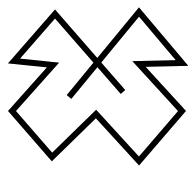

<mat-toolbar color="primary" style="height:75px;">
	<a [routerLink]="['/dashboard']" [routerLinkActive]="['router-link-active']" mat-flat-button class="nav-header"> B4OS
	</a>
	<span class="example-fill-remaining-space"></span>
	<a mat-flat-button [matMenuTriggerFor]="menu">
		<span>{{userName}} </span>
		<mat-icon>perm_identity</mat-icon>
		
	</a>
	<mat-menu #menu="matMenu" yPosition="below" xPosition="before" overlapTrigger="false">
		<a mat-menu-item (click)="setExpanded()">
			<mat-icon svgIcon="wallet">dialpad</mat-icon>
			<span>Wallet</span>
		</a>
		<a mat-menu-item [routerLink]="['/login']" (click)="onLoggedout()">
			<mat-icon>power_settings_new</mat-icon>
			<span>Log Out</span>
		</a>
	</mat-menu>
</mat-toolbar>